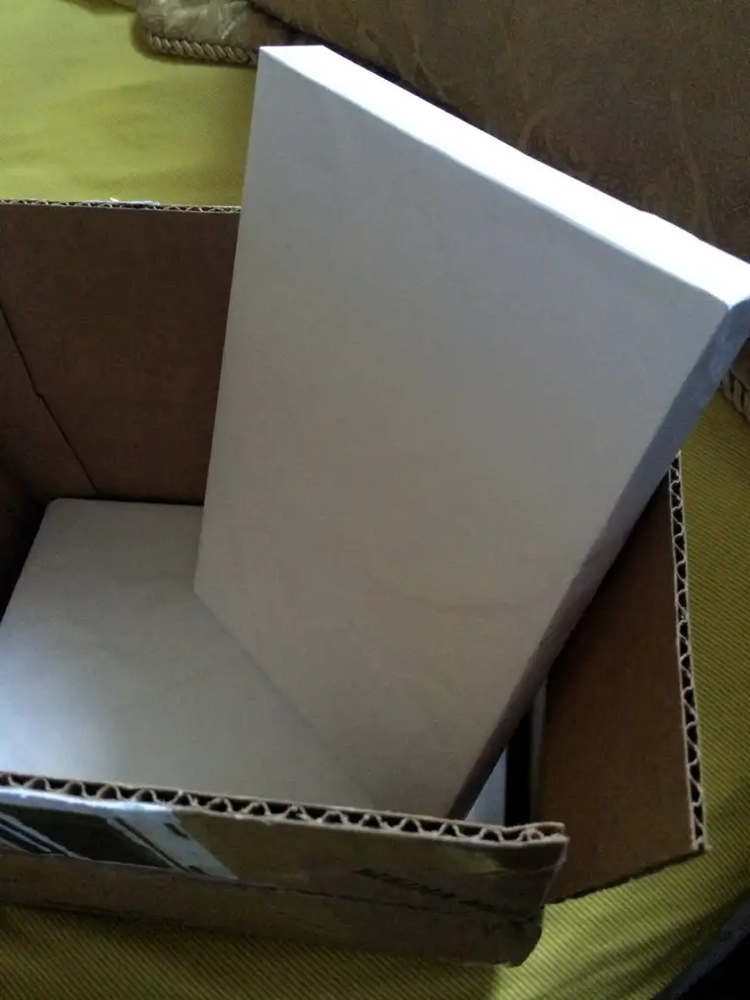
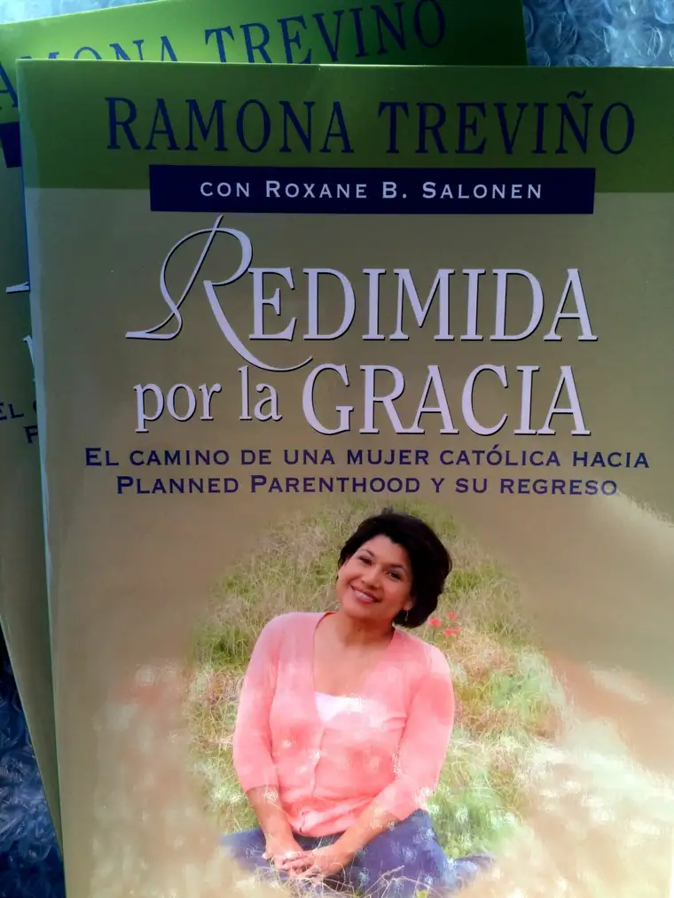

I’ve known for some time that the Spanish version of our book, “Redeemed by Grace,” was on the horizon.
A few weeks ago, I saw that it was available for pre-order online. Though I wasn’t as directly involved in its birthing, Ramona was scurrying around a few months back to collect the necessary endorsements for “Redimida por la Gracia,” even as we were wrapping up the English version.
Two summers ago, when we met Ignatius Press marketing director Anthony Ryan at a Catholic marketing conference, Ramona and I were filled in on the publisher’s vision for this work and how excited they were at the thought of having it produced in Spanish, too.
So the Spanish version has been a reality in my mind for a while. But because I had never seen the working document, it was not squarely at the fore. Certainly, I didn’t have any indication that it would be a soft cover, or that we would be sent advanced copies like when the English version launched less than two months ago.
So on Monday, when I saw the box of what seemed like books in my mailbox, I was confused. I’d just ordered several boxes for an event coming up, but those were in hand. What could this be?
My mind was in a lot of different places that afternoon as my middle son and I waited in the school parking lot for my daughters, who would be arriving any minute from a five-day bus trip, their spring choir tour to Colorado. With time to kill, I grabbed the box and began figuring out the best way into it to unveil its mysterious contents.
 
{kind=link}
{kind=link}
I’m still sort of blown away by the reality of this; how having our book in Spanish will give that many more readers a chance to experience this beautiful story of God’s redeeming grace. Soon, a woman who only speaks Spanish will read the story Ramona and I fashioned together and, hopefully, be deeply touched. Because of Ignatius’ decision to close the language divide for the benefit of potential readers, more will smile, cry and thank God for the chance to learn this story of one soul’s journey from darkness to light.
Now that it’s hit me, now that I’m holding this book in my hands, you could say I’m just a LITTLE BIT EXCITED! It’s been a thrill to hear reactions thus far from English-speaking friends. Even though it might take a while for the Spanish-speaking responses to come to me, I know that they will, and I really look forward to seeing how it will touch the hearts who think and read en Español.
We are in the midst of Holy Week right now, and I can’t think of a better Easter gift than to know that more people will see God’s Divine Mercy in action through this book, because of Ramona’s story. She is one brave woman to let go of her pride and open her soul to the world.
My only regret is that, though I have studied Spanish, I am not versed in it enough to truly enjoy this version in full. I can read some, but not all of it, cover to cover. Of course, I know the story well, but being fluent in Spanish myself would have made it all the sweeter.
Dear Lord, you know the specific people who are in need of this story. Wherever they are, and whatever language they speak, deliver this story safely into their hands, for your glory and honor.
I will be on a brief blogging hiatus for a week as I celebrate the Easter Triduum with my family. God bless all of you and have a happy and holy Easter!